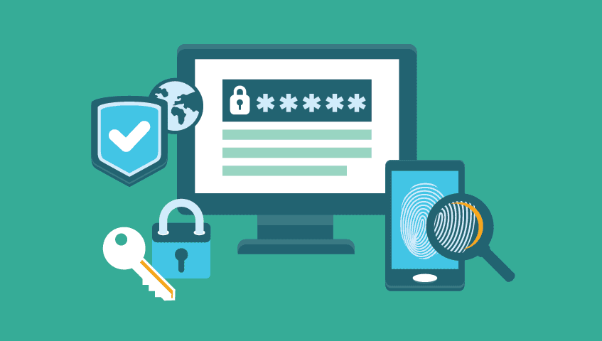

Protegiendo tu Información en la Era Digital
En un mundo cada vez más conectado, la seguridad informática es fundamental para proteger nuestros datos personales y sistemas.
Desde contraseñas seguras hasta medidas de cifrado avanzadas, aprende cómo mantener tu información segura en línea.
Tipos de seguridad informática
Seguridad en la Red
La seguridad en la red se centra en proteger la infraestructura de comunicaciones de una organización, incluidas las redes locales (LAN), las redes de área amplia (WAN) y la conexión a internet. Esto incluye la implementación de firewalls, detección de intrusiones, sistemas de prevención de intrusiones (IPS), sistemas de prevención de pérdida de datos (DLP) y VPN (Redes Privadas Virtuales) para garantizar que la información transmitida a través de la red esté protegida contra accesos no autorizados y ataques externos.
Seguridad de la información o de datos
La seguridad de la información se refiere a la protección de los datos almacenados en sistemas informáticos contra accesos no autorizados, robo, pérdida o daño. Esto incluye la implementación de controles de acceso, cifrado de datos, políticas de gestión de contraseñas, copias de seguridad regulares y sistemas de gestión de identidad y acceso (IAM) para garantizar que solo usuarios autorizados tengan acceso a la información confidencial.
Seguridad de los sistemas operativos
La seguridad de los sistemas operativos se centra en proteger los sistemas operativos de computadoras y servidores contra vulnerabilidades, malware y ataques dirigidos. Esto incluye la aplicación de parches de seguridad, la configuración segura de sistemas operativos, la instalación de software antivirus y antispyware, y la implementación de políticas de seguridad de sistemas para mitigar riesgos y proteger la integridad de los sistemas operativos.
Seguridad de las aplicaciones
La seguridad de las aplicaciones se refiere a la protección de las aplicaciones de software contra vulnerabilidades, ataques de inyección de código, ataques de denegación de servicio (DDoS) y otras amenazas. Esto incluye la implementación de pruebas de seguridad de aplicaciones (AST), el uso de frameworks de seguridad, la codificación segura y la aplicación de parches de seguridad para garantizar que las aplicaciones sean seguras y resistentes a los ataques.
Seguridad de identidad
La seguridad de identidad es un componente crítico de las estrategias de ciberseguridad en las organizaciones modernas. Se centra en asegurar y gestionar las identidades digitales dentro de una empresa, incluyendo tanto a usuarios humanos como a entidades de máquinas (como aplicaciones y dispositivos). El objetivo es garantizar que sólo los usuarios autorizados tengan acceso a los recursos tecnológicos críticos, y que este acceso sea apropiado y conforme a las políticas de seguridad vigentes.